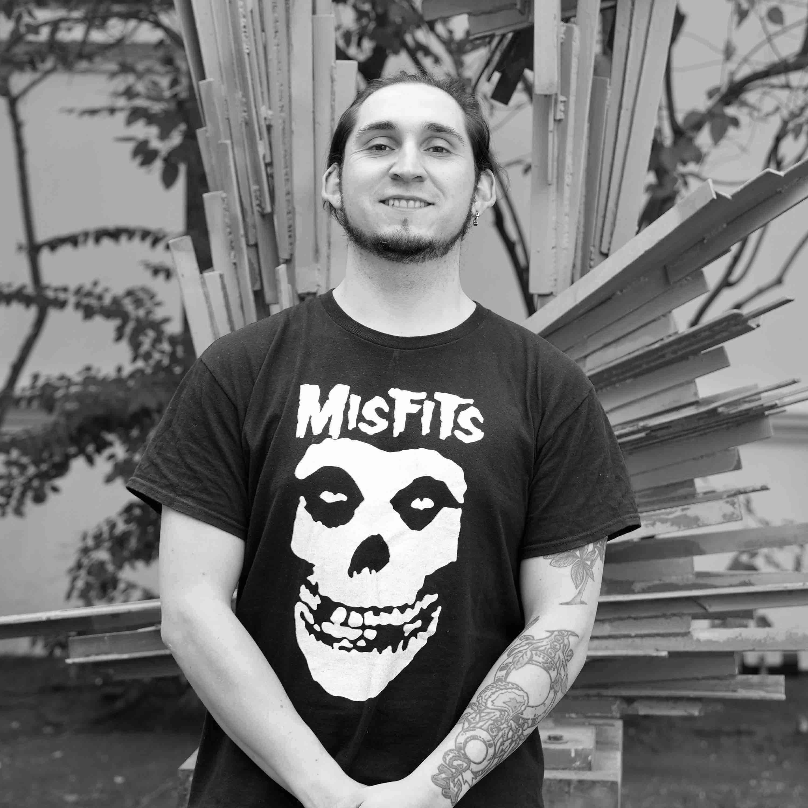

El equipo e integrantes
 ¡Hola somos AstroLab! Somos un equipo compuesto de astrónomos, físicos e ingenieros trabajando codo-a-codo para entender eventos astronómicos desde las ondas largas de radio a el régimen óptico (con énfasis en ciencia de multi-frecuencias). Nuestro interés científico son pulsars y ráfagas de radio rápidas (FRB; de la sigla en inglés fast radio bursts). En particular, nos dedicamos a diseñar y construir instrumentos astronómicos dedicados a la detección de eventos en el regimen de los milisegundos (hasta nanosegundos al límite de nuestra instrumentación). Tenemos experiencia en instrumentación de radio (construyendo componentes analógicos y digitales), análisis de datos, e interpretación astrofísica de lo que observamos. Nuestros integrantes trabajan directamente con datos e instrumentos de telescopios como el Atacamam Pathfinder Experiment (APEX), Atacama Large Millimeter/sub-millimeter Array (ALMA), el telescopio de 100-m Effelsberg, Candian Hydrogen Intensity Mapping Experiment (CHIME), y detectores rápidos en ópitos como el Italian quantum eye (IQUEYE). AstroLab colabora directamente con el laboratorio de ondas milimétricas (MWL) del Departamento de Astronomía de la Universidad de Chile.
¡Hola somos AstroLab! Somos un equipo compuesto de astrónomos, físicos e ingenieros trabajando codo-a-codo para entender eventos astronómicos desde las ondas largas de radio a el régimen óptico (con énfasis en ciencia de multi-frecuencias). Nuestro interés científico son pulsars y ráfagas de radio rápidas (FRB; de la sigla en inglés fast radio bursts). En particular, nos dedicamos a diseñar y construir instrumentos astronómicos dedicados a la detección de eventos en el regimen de los milisegundos (hasta nanosegundos al límite de nuestra instrumentación). Tenemos experiencia en instrumentación de radio (construyendo componentes analógicos y digitales), análisis de datos, e interpretación astrofísica de lo que observamos. Nuestros integrantes trabajan directamente con datos e instrumentos de telescopios como el Atacamam Pathfinder Experiment (APEX), Atacama Large Millimeter/sub-millimeter Array (ALMA), el telescopio de 100-m Effelsberg, Candian Hydrogen Intensity Mapping Experiment (CHIME), y detectores rápidos en ópitos como el Italian quantum eye (IQUEYE). AstroLab colabora directamente con el laboratorio de ondas milimétricas (MWL) del Departamento de Astronomía de la Universidad de Chile.
 MSc. Gonzalo Burgos. Magíster en física e ingeniero físico (Universidad de Concepción; UdeC). Gonzalo es un experto en instrumentación de longitudes de onda largas, antenas de radio y ensamblaje práctico de interferómetros. Gonzalo es el ingeniero de proyecto (logística y apoyo a estudiantes) para el proyecto del Canadian-Chilean array for radio transient studies (CHARTS). Gonzalo trabaja activamente junto a estudiantes y miembros del personal liderando el ensamblaje de los 256 elementos de CHARTS y su correlador FX (tipo transformada de Fourier y multiplicación). Los principales intereses de Gonzalo son el diseño y la arquitectura del X-engine (correlador de radio frecuencias) y el pipeline (algoritmos) de búsqueda en tiempo real para eventos transitorios.
 Prof. Tomás Cassanelli. Astrónomo y profesor asistente del Departamento de Ingeniería Eléctrica de la Universidad de Chile. Tomás realizó estudios en ingeniería en la Universidad de La Frontera, un magíster en astrofísica en Universität Bonn, y luego un doctorado en University of Toronto. Sus intereses son ráfagas rápidas (del inglés fast radio bursts; FRBs) tanto en longitudes de onda de radio como en óptico, como: FRBs, pulsares, y su instrumentación de ondas de radio largas (incluyendo interferómetros locales ya grandes distancias) y su instrumentación en óptico, para observar y localizar los eventos de ráfagas rápidas.
Prof. Tomás Cassanelli. Astrónomo y profesor asistente del Departamento de Ingeniería Eléctrica de la Universidad de Chile. Tomás realizó estudios en ingeniería en la Universidad de La Frontera, un magíster en astrofísica en Universität Bonn, y luego un doctorado en University of Toronto. Sus intereses son ráfagas rápidas (del inglés fast radio bursts; FRBs) tanto en longitudes de onda de radio como en óptico, como: FRBs, pulsares, y su instrumentación de ondas de radio largas (incluyendo interferómetros locales ya grandes distancias) y su instrumentación en óptico, para observar y localizar los eventos de ráfagas rápidas.
 Juan Pablo Contreras. Estudiante de pregrado de ingeniería civil eléctrica de la Universidad de Chile. Juan Pablo lleva a cabo un proyecto de investigación enfocado en desarrollar nuevas técnicas para identificar microestructuras en pulsos de fast radio bursts (FRBs; ráfagas de radio rápidas) repetitivos en conjuntos de datos de alta resolución, provenientes del radiotelescopio CHIME/FRB. Para abordar el gran volumen y la complejidad de estos datos, utiliza Compute Canada, el supercomputador de Canadá de la Universidad de Toronto. Este trabajo implica la implementación de técnicas de procesamiento paralelo (multiprocessing) en slurm, esenciales para gestionar de manera eficiente los datos y optimizar los algoritmos de análisis. El proyecto contempla el diseño de pipelines para el análisis masivo de archivos, y a futuro, colaboraciones con simulaciones personalizadas que permitan validar los métodos desarrollados.
Juan Pablo Contreras. Estudiante de pregrado de ingeniería civil eléctrica de la Universidad de Chile. Juan Pablo lleva a cabo un proyecto de investigación enfocado en desarrollar nuevas técnicas para identificar microestructuras en pulsos de fast radio bursts (FRBs; ráfagas de radio rápidas) repetitivos en conjuntos de datos de alta resolución, provenientes del radiotelescopio CHIME/FRB. Para abordar el gran volumen y la complejidad de estos datos, utiliza Compute Canada, el supercomputador de Canadá de la Universidad de Toronto. Este trabajo implica la implementación de técnicas de procesamiento paralelo (multiprocessing) en slurm, esenciales para gestionar de manera eficiente los datos y optimizar los algoritmos de análisis. El proyecto contempla el diseño de pipelines para el análisis masivo de archivos, y a futuro, colaboraciones con simulaciones personalizadas que permitan validar los métodos desarrollados.
 Joaquín Díaz. Estudiante de pregrado en ingeniería civil eléctrica en la Universidad de Chile. Joaquín ha trabajado en el accionamiento mecánico del plato de 3 m del CPT (CHARTS pathfinder telescope), pero ahora ha pasado a frecuencias más altas. Actualmente desarrolla, a partir de primeros principios físicos (materia e interacción con la luz), un modelo teórico para la detección de radiación óptica en escalas de tiempo extremadamente breves (menores a los nanosegundos). Su trabajo busca generar conceptos teórico-prácticos que permitan una mejor caracterización de la instrumentación, así como evaluar su aplicabilidad y los observables físicos del sistema en observaciones astronómicas.
Joaquín Díaz. Estudiante de pregrado en ingeniería civil eléctrica en la Universidad de Chile. Joaquín ha trabajado en el accionamiento mecánico del plato de 3 m del CPT (CHARTS pathfinder telescope), pero ahora ha pasado a frecuencias más altas. Actualmente desarrolla, a partir de primeros principios físicos (materia e interacción con la luz), un modelo teórico para la detección de radiación óptica en escalas de tiempo extremadamente breves (menores a los nanosegundos). Su trabajo busca generar conceptos teórico-prácticos que permitan una mejor caracterización de la instrumentación, así como evaluar su aplicabilidad y los observables físicos del sistema en observaciones astronómicas.
 Constanza Espinoza. Estudiante de pregrado en astronomía en la Universidad de Chile, supervisada por Tomás y Prof. Cruces (Pontificia Universidad Católica; PUC). La investigación de Connie se centra en restringir el comportamiento de las FRBs periódicas para comprenderlas mejor, específicamente modelando su ventana de actividad a través del tiempo y la frecuencia (colaborando activamente con MPIfR). Sin embargo, sus intereses se extienden más allá de este proyecto e incluyen el uso de FRBs como herramientas para realizar cosmológia, profundizando en la cosmología observacional y empleando la radioastronomía para estos fines. Connie está trabajando en su primera publicación científica.
Constanza Espinoza. Estudiante de pregrado en astronomía en la Universidad de Chile, supervisada por Tomás y Prof. Cruces (Pontificia Universidad Católica; PUC). La investigación de Connie se centra en restringir el comportamiento de las FRBs periódicas para comprenderlas mejor, específicamente modelando su ventana de actividad a través del tiempo y la frecuencia (colaborando activamente con MPIfR). Sin embargo, sus intereses se extienden más allá de este proyecto e incluyen el uso de FRBs como herramientas para realizar cosmológia, profundizando en la cosmología observacional y empleando la radioastronomía para estos fines. Connie está trabajando en su primera publicación científica.
Dr. Julián Faúndez. Investigador postdoctoral visitante en Astrolab, Departamento de Ingeniería Eléctrica, Universidad de Chile. Obtuvo su título de Ingeniería en la Universidad de La Frontera (UFRO) y su Doctorado en la Universidade Federal do Rio Grande do Sul (UFRGS), seguido de estancias postdoctorales en Temple University (TU) y Universidade Federal do Rio de Janeiro (UFRJ). Su trabajo se centra en sistemas de electrones fuertemente correlacionados (efecto Kondo, magnetismo, superconductividad) mediante teoría de campo medio (MF), teoría dinámica de campo medio (DMFT) y Monte Carlo cuántico (QMC); acoplamiento luz-materia y fenómenos topológicos en cavidades ópticas por diagonalización exacta (DE); y heteroestructuras cuánticas para explorar fases cuánticas emergentes.
 Sebastián Manosalva. Estudiante de magíster en ingeniería eléctrica de la Universidad de Chile. Sebastián está interesado en el desarrollo de instrumentación astronómica, en particular en el diseño de sistemas de multiplexing de radio frecuencias (mezcla coherente de radio frecuencias). Actualmente, Sebastián está trabajando en el desarrollo de un sistema de radio frecuencia para el proyecto CHARTS, el cual tiene como objetivo detectar FRBs en Chile.
Sebastián Manosalva. Estudiante de magíster en ingeniería eléctrica de la Universidad de Chile. Sebastián está interesado en el desarrollo de instrumentación astronómica, en particular en el diseño de sistemas de multiplexing de radio frecuencias (mezcla coherente de radio frecuencias). Actualmente, Sebastián está trabajando en el desarrollo de un sistema de radio frecuencia para el proyecto CHARTS, el cual tiene como objetivo detectar FRBs en Chile.
 Pascual Marcone. Estudiante de pregrado de ingeniería civil eléctrica de la Universidad de Chile. Aunque la astronomía es un área relativamente nueva para él, Pascual está activamente interesado en explorar diversas ramas tanto de la astronomía aplicada como de ingeniería eléctrica. Por ahora, se inclina hacia el mundo de los instrumentos astronómicos, enfocándose en sus características técnicas, tanto en el dominio de software como de hardware. Actualmente, Pascual está trabajando en etapas preliminares para la exploración de contrapartes principalmente ópticos de eventos de ráfagas rápidas (FRBs y pulsares), enfocandose en la detección de estos con contadores de fotones rápidos.
Pascual Marcone. Estudiante de pregrado de ingeniería civil eléctrica de la Universidad de Chile. Aunque la astronomía es un área relativamente nueva para él, Pascual está activamente interesado en explorar diversas ramas tanto de la astronomía aplicada como de ingeniería eléctrica. Por ahora, se inclina hacia el mundo de los instrumentos astronómicos, enfocándose en sus características técnicas, tanto en el dominio de software como de hardware. Actualmente, Pascual está trabajando en etapas preliminares para la exploración de contrapartes principalmente ópticos de eventos de ráfagas rápidas (FRBs y pulsares), enfocandose en la detección de estos con contadores de fotones rápidos.
 Francisco Muñoz. Francisco es estudiante de último año de pregrado en ingeniería civil eléctrica en la Universidad de Chile, especializado en instrumentación, sistemas digitales y electrónica. Su proyecto de tesis abarca el diseño y construcción de un amplificador de bajo ruido (ULNA; de sus siglas en inglés ultra low noise amplifier) especializado para el proyecto Canadian-Chilean array for radio transient studies (CHARTS). El proyecto involucra el desarrollo integral de prototipos, incluyendo diseño de placas (printed circuit boards; PCB), fabricación, soldado de componentes y pruebas rigurosas. El ULNA está diseñado para amplificar y reducir significativamente el ruido en señales de baja intensidad recibidas por antenas de baja frecuencia (300--500 MHz), con un objetivo crítico de alcanzar temperaturas de ruido por debajo de 30 K para mejorar la detección de ráfagas de radio rápidas (o FRBs).
Francisco Muñoz. Francisco es estudiante de último año de pregrado en ingeniería civil eléctrica en la Universidad de Chile, especializado en instrumentación, sistemas digitales y electrónica. Su proyecto de tesis abarca el diseño y construcción de un amplificador de bajo ruido (ULNA; de sus siglas en inglés ultra low noise amplifier) especializado para el proyecto Canadian-Chilean array for radio transient studies (CHARTS). El proyecto involucra el desarrollo integral de prototipos, incluyendo diseño de placas (printed circuit boards; PCB), fabricación, soldado de componentes y pruebas rigurosas. El ULNA está diseñado para amplificar y reducir significativamente el ruido en señales de baja intensidad recibidas por antenas de baja frecuencia (300--500 MHz), con un objetivo crítico de alcanzar temperaturas de ruido por debajo de 30 K para mejorar la detección de ráfagas de radio rápidas (o FRBs).
 Bruno Pollarolo. Estudiante de pregrado ingeniería civil eléctrica y astronomía en la Universidad de Chile. Bruno está trabajando en un sistema de espectrómetro completo para el proyecto CHARTS. Aquí está desarrollando código para los nuevos digitalizadores llamados radio frequency system-on-chip (RFSoC) 4x2 de Xilinx AMD. El trabajo de Bruno se centra en desarrollar un código personalizado para procesar tantas antenas como sea posible en un solo digitalizador, un proceso llamado desmultiplexación (demodular varias antenas desde un solo convertidor analógico a digital; ADC), para digitalizar en un ancho de banda amplio varias antenas de un ancho de banda modesto de 200 MHz. El proyecto de Bruno está en el núcleo de la digitalización de CHARTS. Un solo digitalizador será capaz de convertir un total de 32 señales analógicas de antena (de los 256 elementos de CHARTS).
Bruno Pollarolo. Estudiante de pregrado ingeniería civil eléctrica y astronomía en la Universidad de Chile. Bruno está trabajando en un sistema de espectrómetro completo para el proyecto CHARTS. Aquí está desarrollando código para los nuevos digitalizadores llamados radio frequency system-on-chip (RFSoC) 4x2 de Xilinx AMD. El trabajo de Bruno se centra en desarrollar un código personalizado para procesar tantas antenas como sea posible en un solo digitalizador, un proceso llamado desmultiplexación (demodular varias antenas desde un solo convertidor analógico a digital; ADC), para digitalizar en un ancho de banda amplio varias antenas de un ancho de banda modesto de 200 MHz. El proyecto de Bruno está en el núcleo de la digitalización de CHARTS. Un solo digitalizador será capaz de convertir un total de 32 señales analógicas de antena (de los 256 elementos de CHARTS).